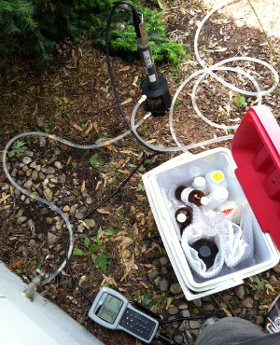
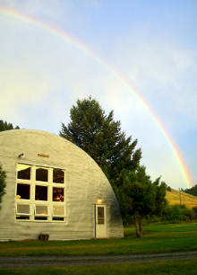
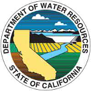
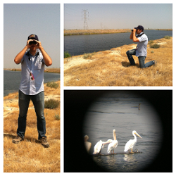

<!DOCTYPE html>
<html>
<head>
<title>Paul Levy - Mapping</title>

<meta name="viewport" content="width=device-width, initial-scale=0.75, maximum-scale=0.75, user-scalable=no" />

<link rel="stylesheet" href="http://cdn.leafletjs.com/leaflet-0.7.2/leaflet.css" />
<link rel="stylesheet" type="text/css" href="js/shadowbox.css">

<script src="js/arsenic_nitrates_some.js" type="text/javascript"></script>
<script src="http://cdn.leafletjs.com/leaflet-0.7.2/leaflet.js"></script>
<script type="text/javascript" src="js/shadowbox.js"></script>
<script type="text/javascript">
Shadowbox.init();
</script>

<style>
html,body{
    margin: 0px;
    padding: 0px;
    border: 0;
    outline: 0;
    background:#858585;
    font-family: arial, sans-serif;
    }
    
.wrapper{
    left: 0px;
    top: 0px;
    bottom: 0px;
    right: 0;
    position: absolute;
    }
    
.content{
    top: 1px;
    bottom: 0px;
    overflow: auto;
    position: absolute;
    left: 0;
    right: 0;
    }
    
.header{
    top: 0;
	bottom: 0;
    right: 0;
    left: 0;
    position: absolute;
	
	font-size: 30px;
    }
    
.main_map{
    height:100%;
    width:100%;
    padding-bottom:0px;
    }

.footer_nav{
    bottom: 0;
    right: 0;
    left: 0;
    position: absolute;
    width:100%;
    }
    
.footer_left{
    float:left;
    text-align:left;
    }
	
.footer_center{
	text-align:center;
	}
    
.footer_right{
    display:inline;
    float:right;
    text-align:right;
    }
	
.popup_image{
	max-height: 30%
	padding: 1%
	}

.img_blowup{
	position: fixed;
	top-margin: 5%;
	right-magin: 5%;
	max-height: 50%;
	max-width: 50%;
}

</style>

</head>

<body>


<div class="wrapper">

<div class="content">


<div class="header">
<div id="map" class="main_map">
</div>
</div>

<script>
	function tester() {
		alert('This is a test.');
	}
	
	function bigpic(bigpicpath) {
		this.src = bigpicpath;
		this.class = img_blowup;
	};
	
	function littlepic(littlepicpath){
		this.src = littlepicpath;
		this.class = popup_image;
	};

    var map = L.map('map');
    
    L.tileLayer('http://a.tile.openstreetmap.org/{z}/{x}/{y}.png', {
			maxZoom: 16,
			attribution:  "Data, imagery and map information provided by MapQuest, OpenStreetMap and contributors, ODbL. | <a href='http://mapicons.nicolasmollet.com/'>Map Icons Collection</a>" 
		}).addTo(map);
    
    var icon_job = L.icon({
        iconUrl: 'office_building.png',
        shadowUrl: 'shadow.png',
        iconAnchor: [16, 37],
        popupAnchor: [0, -37]
        });
        
    var icon_school = L.icon({
        iconUrl: 'university.png',
        shadowUrl: 'shadow.png',
        iconAnchor: [16, 37],
        popupAnchor: [0, -37]
        });
        
    var icon_camp = L.icon({
        iconUrl: 'summercamp.png',
        shadowUrl: 'shadow.png',
        iconAnchor: [16, 37],
        popupAnchor: [0, -37]
        });
        
	var icon_geothermal = L.icon({
        iconUrl: 'anemometer_mono.png',
        shadowUrl: 'shadow.png',
        iconAnchor: [16, 37],
        popupAnchor: [0, -37]
        });
		
	var icon_lab = L.icon({
        iconUrl: 'lab.png',
        shadowUrl: 'shadow.png',
        iconAnchor: [16, 37],
        popupAnchor: [0, -37]
        });
		
	var icon_waterdrop = L.icon({
        iconUrl: 'waterdrop.png',
        shadowUrl: 'shadow.png',
        iconAnchor: [16, 37],
        popupAnchor: [0, -37]
        }); 

	var icon_bird = L.icon({
        iconUrl: 'wildlife_bird.png',
        shadowUrl: 'shadow.png',
        iconAnchor: [16, 37],
        popupAnchor: [0, -37]
        }); 
		
	var icon_fish = L.icon({
        iconUrl: 'fishing.png',
        shadowUrl: 'shadow.png',
        iconAnchor: [16, 37],
        popupAnchor: [0, -37]
        }); 
			
	var icon_river = L.icon({
        iconUrl: 'river.png',
        shadowUrl: 'shadow.png',
        iconAnchor: [16, 37],
        popupAnchor: [0, -37]
        }); 
        
    
	marker_idem=L.marker([39.76913, -86.16431], {
        icon: icon_job,
        title:"Environmental Manager",
        riseOnHover:true, 
    }).addTo(map)
		.bindPopup("<b>January 2012 - Present</b><br><i>Environmental Manager</i><br>Indiana Department of Environmental Management<br>Office of Water Quality<br>Drinking Water Branch - Ground Water Section<br><br>Statewide Ground Water Monitoring Network<br><a href='javascript:;' alt='Show/hide arsenic detections.' onclick='button_GWMN_arsenic()'>Show/hide arsenic detections.</a><br><a href='javascript:;' alt='Show/hide nitrate detections.' onclick='button_GWMN_nitrates()'>Show/hide nitrate detections.</a><br>");
	
	marker_lakestation=L.marker([41.58264, -87.26861], {
		icon: icon_waterdrop,
		title:"Student",
		riseOnHover:true,
	}).addTo(map)
		.bindPopup("<b>Spring 2010</b><br>Undergraduate Research<br><i>A Hydrologic Study of Dune-Wetland<br>Interactions in Lake Station Indiana</i><br>&nbsp;-&nbsp;2D Ground water modeling project<br>&nbsp;-&nbsp;<a href='BSES_senior_research_abstract_slides.pdf' target='none'>Project abstract and slides</a><br><br><a href='javascript:;' onclick='zoom_IN()'>back to Indiana</a>")
	
    marker_claylab=L.marker([39.17199, -86.52212], {
        icon: icon_lab,
        title:"Lab Technician",
        riseOnHover:true, 
    }).addTo(map)
		.bindPopup("<b>April 2009 - December 2011</b><br><i>Lab Technician</i><br>Murray Applied Clay Mineralogy Laboratory<br>&nbsp;-&nbsp;Prepared samples and performed analyses<br>&nbsp;&nbsp;&nbsp;&nbsp;&nbsp;-&nbsp;x-ray diffraction<br>&nbsp;&nbsp;&nbsp;&nbsp;&nbsp;-&nbsp;particle size analysis<br>&nbsp;&nbsp;&nbsp;&nbsp;&nbsp;-&nbsp;brightness<br>&nbsp;-&nbsp;Maintained lab equipement<br>&nbsp;-&nbsp;Wrote operating procedures")
	
    marker_cgda=L.marker([39.17213, -86.52134], {
        icon: icon_job,
        title:"Research Assistant",
        riseOnHover:true, 
    }).addTo(map)
		.bindPopup("<b>June 2010 - December 2011</b><br><i>Environmental Geology Research Assistant</i><br>Indiana Geological Survey<br>Center for Geospatial Data Analysis<br><br>Indiana Shallow Geothermal Monitoring Network<br>&nbsp;-&nbsp;Installed stations to collect soil and meteorological data to assess Indiana's geothermal potential<br><a href='javascript:;' onclick='button_geothermal()'>Show/hide geothermal monitoring locations.</a><br><a href='http://igs.indiana.edu/Geothermal/ShallowGeothermal.cfm' target='blank'>IGS web page</a><br><br><b>April 2010 - August 2010</b><br><i>Sedimentary Geology Research Assistant</i><br>&nbsp;-&nbsp;Collected, described, and processed soil cores<br>&nbsp;-&nbsp;Conducted grain size, moisture, and density analysis");
    
    marker_spea=L.marker([39.17266, -86.51768], {
        icon: icon_school,
        title:"Student",
        riseOnHover:true,
		zIndexOffset: 500
    }).addTo(map)
		.bindPopup("Indiana University Bloomington<br>School of Public and Environmental Affairs<br><br><b>Master of Science<br>Environmental Science</b><br>May 2011<br><br><b>Bachelor of Science<br>Environmental Science</b><br>August 2010<br><br>Experiences<br>&nbsp;-&nbsp;<a href='javascript:;' onclick='map.setView(marker_iugfs.getLatLng(),15);'>Field course at IU Geological Field Station</a><br>&nbsp;-&nbsp;<a href='javascript:;' onclick='map.setView(marker_lakestation.getLatLng(),13);'>Senior Research: 2D Ground Water Modeling</a><br>&nbsp;-&nbsp;<a href='javascript:;' onclick='map.setView(marker_claylab.getLatLng(),16);'>Murray Clay Mineralogy Laboratory</a><br>&nbsp;-&nbsp;<a href='javascript:;' onclick='map.setView(marker_cgda.getLatLng(),16);'>Indiana Geological Survey</a>");
     
    marker_iugfs=L.marker([45.7280, -111.97151], {
        icon: icon_camp,
        title:"Student",
        riseOnHover:true, 
    }).addTo(map)
		.bindPopup("<b>Summer 2009</b><br>Indiana University Geological Field Station<br><br>Field activities<br>&nbsp;-&nbsp;backcountry topographic map navigation<br>&nbsp;-&nbsp;surface water sampling<br>&nbsp;-&nbsp;plant, animal, and mineral identification<br>&nbsp;-&nbsp;botanical survey methods<br>&nbsp;-&nbsp;tree core analysis<br>&nbsp;-&nbsp;micrometeorology<br>&nbsp;-&nbsp;geomorphology<br>&nbsp;-&nbsp;stream habitat analysis<br><br><a href='javascript:;' onclick='zoom_IN()'>back to Indiana</a>");
		
    marker_BDO=L.marker([38.575511, -121.49735], {
        icon: icon_job,
        title:"Scientific Aid",
        riseOnHover:true, 
		zIndexOffset:1000,
    }).addTo(map)
		.bindPopup("<b>July 2014 - Present</b><br><i>Scientific Aid</i><br>California Department of Water Resources<br>Bay Delta Office<br>Conveyance Branch<br><br><a href='javascript:;' onclick='map.fitBounds(marker_group_CCFPS.getBounds(), {padding: [100,100]});'>Clifton Court Forebay Predation Study</a><br>&nbsp;-&nbsp;Collect fish using hook and line sampling methods<br>&nbsp;-&nbsp;Tag and release fish<br>&nbsp;-&nbsp;Conduct bird and fishermen surveys<br>&nbsp;-&nbsp;Collect weather and water quality data<br>&nbsp;-&nbsp;Created database for storing tagged fish data<br><a href='javascript:;' onclick='map.fitBounds(marker_group_FSE.getBounds(), {padding: [100,100]});'>Fish Screen Evaluations</a><br>&nbsp;-&nbsp;Collect larval fish that have passed screens<br>&nbsp;-&nbsp;Measure screen approach velocity<br>&nbsp;-&nbsp;Document screen condition before and after monthly cleaning<br>");
    
	marker_bird=L.marker([37.83029, -121.55604], {
        icon: icon_bird,
        title:"Scientific Aid",
        riseOnHover:true, 
    }).addTo(map)
		.bindPopup("<b>July 2014 - Present</b><br><i>Scientific Aid</i><br>California Department of Water Resources<br>Bay Delta Office<br>Conveyance Branch<br><br>Clifton Court Forebay Predation Study<br>&nbsp;-&nbsp;Piscivorous bird surveys<br>");
    
	marker_fish=L.marker([37.83228, -121.59363], {
        icon: icon_fish,
        title:"Scientific Aid",
        riseOnHover:true, 
    }).addTo(map)
		.bindPopup("<b>July 2014 - Present</b><br><i>Scientific Aid</i><br>California Department of Water Resources<br>Bay Delta Office<br>Conveyance Branch<br><br>Clifton Court Forebay Predation Study<br>&nbsp;-&nbsp;Fish capture and tagging");
	
	marker_barker_slough=L.marker([38.2761897,-121.7970729], {
        icon: icon_river,
        title:"Scientific Aid",
        riseOnHover:true, 
    }).addTo(map)
		.bindPopup("<b>January 2015 - Present</b><br><i>Scientific Aid</i><br>California Department of Water Resources<br>Bay Delta Office<br>Conveyance Branch<br><br>Fish Screen Evaluations - Barker Slough<br>&nbsp;-&nbsp;Monitor effectiveness of pumping plant fish screens<br>&nbsp;-&nbsp;Collect post-screen water and filter for larval fish");

	marker_roaring_river=L.marker([38.0934408,-121.8870987], {
        icon: icon_river,
        title:"Scientific Aid",
        riseOnHover:true,
    }).addTo(map)
		.bindPopup("<b>January 2015 - Present</b><br><i>Scientific Aid</i><br>California Department of Water Resources<br>Bay Delta Office<br>Conveyance Branch<br><br>Fish Screen Evaluations - Roaring River<br>&nbsp;-&nbsp;Measure screen approach velocity with Acoustic Doppler Velocimeter<br>&nbsp;-&nbsp;Document screen conditions before and after monthly cleaning");


		
    var marker_group_CCFPS = new L.featureGroup([marker_bird, marker_fish]); 
	var marker_group_FSE = new L.featureGroup([marker_barker_slough,marker_roaring_river]);
    var marker_group = new L.featureGroup([marker_idem, marker_cgda, marker_spea, marker_iugfs, marker_BDO, marker_bird, marker_fish]);

	
    map.fitBounds(marker_group.getBounds(), {padding: [100,100]});
        
    var popup = L.popup();

	
	
	
	function onEachFeature_GWMN(feature, layer){
			layer.bindPopup(feature.properties.ANALYTE + ": " + feature.properties.RESULT + " " +feature.properties.Unit + "<br><a href='javascript:;' onclick='button_GWMN_hide()'>Hide sample locations.</a>");
	};
    
	function onEachFeature_geothermal(feature, layer){
			layer.bindPopup("<b>" + feature.properties.SiteName + "</b><br>Texture: " + feature.properties.Texture + "<br>Geologic Setting: " + feature.properties.GeologicSetting + "<br><a href=" + feature.properties.Hyperlink + " target='_blank'>Live Measurements</a><br><a href='javascript:;' onclick='button_geothermal()'>Hide monitoring stations.</a>");
    };
	
	function getColor(d) {
		return 	d > 10 ? '#ff0000' :
				d > 5 ? '#ff7800' :
						'#0000ff';
	};
	
	function style_GWMN(feature) {
		return {
			color: getColor(feature.properties.RESULT),
			weight: 5,
			opacity: 0.66,
			radius: 3*Math.pow(feature.properties.RESULT, 1/3)
		}
	};
    
    
    var geothermalStyle = {
        "title": "test title here",
        "riseOnHover": true
    };
    
    var sampleStyle = {
        "radius": 5,
        "color": "#ff7800",
        "weight": 5,
        "opacity": 0.66,
    };

    
    var sampleLayer = L.geoJson().addTo(map);
    var show_samples = "none"
    
    function button_GWMN_arsenic(){
        if (show_samples != "a"){
			show_samples = "a";
			sampleLayer.clearLayers();
            sampleLayer = L.geoJson(gwmn_arsenic, {
                onEachFeature: onEachFeature_GWMN,
                
                pointToLayer: function (feature, latlng) {
                    return L.circleMarker(latlng);
                },
                
                style: style_GWMN
            }).addTo(map);
        
            map.fitBounds(sampleLayer.getBounds());
        }
        else{
			show_samples = "none"
            sampleLayer.clearLayers();
        }
    }
	
	
    function button_GWMN_nitrates(){
        if (show_samples != "n"){
			show_samples = "n";
			sampleLayer.clearLayers();
            sampleLayer = L.geoJson(gwmn_nitrates, {
                onEachFeature: onEachFeature_GWMN,
                
                pointToLayer: function (feature, latlng) {
                    return L.circleMarker(latlng);
                },
                
                style: style_GWMN
            }).addTo(map);
        
            map.fitBounds(sampleLayer.getBounds());
        }
        else{
			show_samples = "none"
            sampleLayer.clearLayers();
        }
    }
	
	
    function button_GWMN_hide(){
		show_samples = "none"
		sampleLayer.clearLayers();
    }
    
    
    var geothermalLayer = L.geoJson().addTo(map);
    var show_geothermal = 1
    
    function button_geothermal(){
        show_geothermal *= -1;
        if (show_geothermal == -1){
            geothermalLayer = L.geoJson(geothermal_stations, {
                onEachFeature: onEachFeature_geothermal,
                
                pointToLayer: function (feature, latlng) {
                    return L.marker(latlng, {icon: icon_geothermal, riseOnHover: true});
                }
            }).addTo(map);
			
			var geothermal_group = new L.featureGroup([marker_cgda, geothermalLayer]);
            map.fitBounds(geothermal_group.getBounds());
        }
        else{
            geothermalLayer.clearLayers();
        }
    }
	
	function zoom_IN(){
		map.closePopup();
		map.setView([39.76738, -86.15547], 8);
	}

</script>

</div>
</div>


</body>
</html>